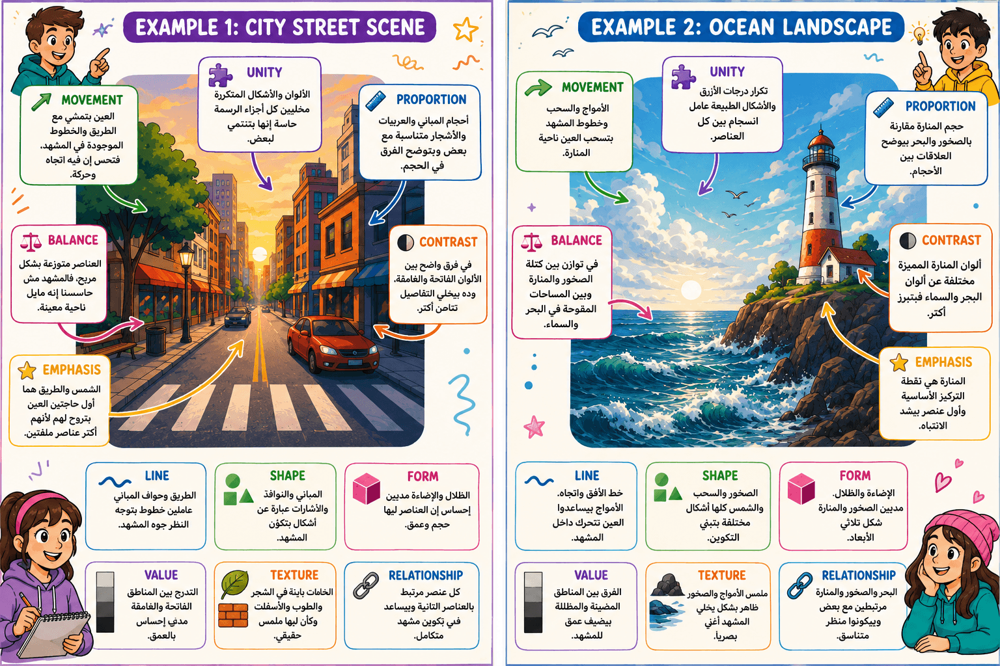
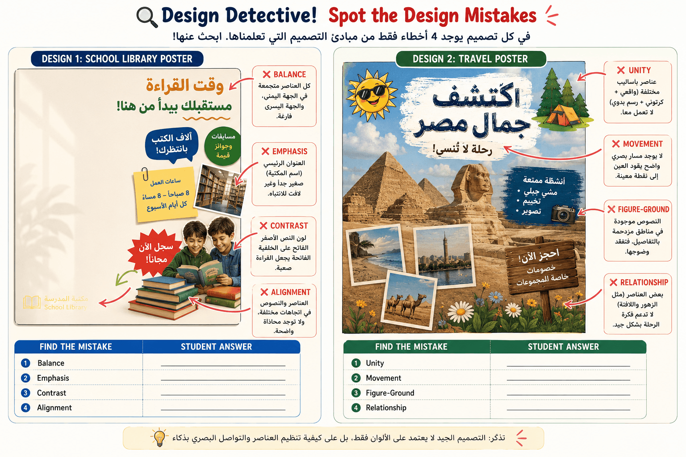
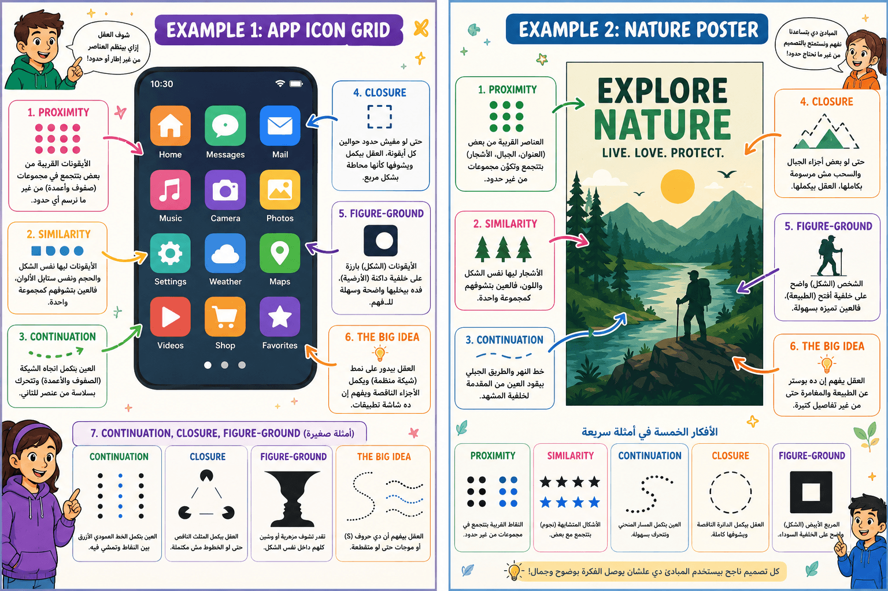
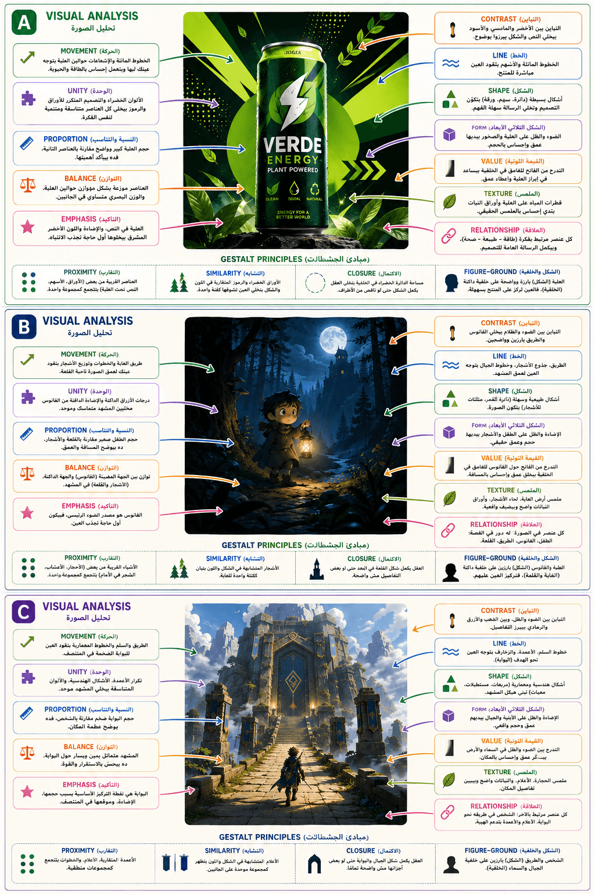
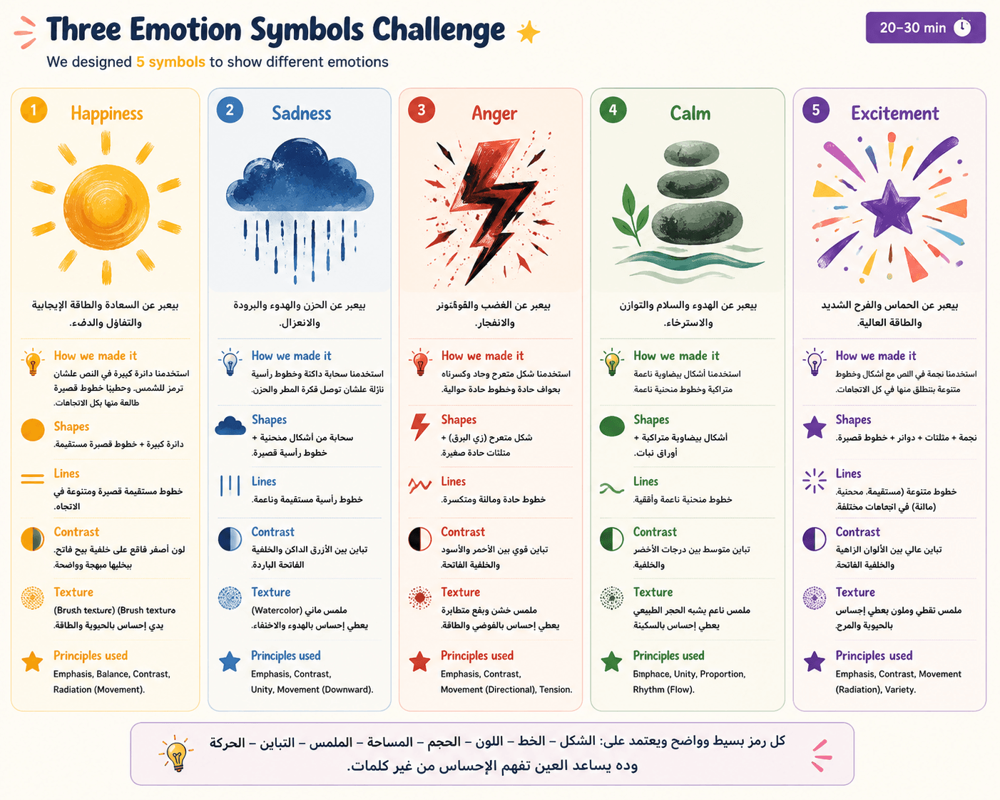

Digital Art
العربي
الفن الرقمي
"النهارده هنبدأ أول درس عندنا في الـ Digital Art.
قبل ما نتكلم عن الرسم أو البرامج، لازم نفهم يعني إيه Digital Art أصلاً.
أي حد فيكم أكيد شاف Logos أو Posters أو فيديوهات على YouTube أو ألعاب أو تطبيقات على الموبايل.
كل الحاجات دي حد صممها.
الشخص ده اسمه Digital Artist أو Graphic Designer أو UI Designer حسب المجال.
إذن الـ Digital Art مش مجرد رسم جميل.
هو استخدام الكمبيوتر أو التابلت علشان نصنع أي محتوى بصري يوصل فكرة أو يحل مشكلة أو يجذب انتباه الناس."
يعني إيه Digital Art
"في الدرس ده هنعرف تعريف الـ Digital Art.
هنشوف هو بيختلف عن الرسم العادي في إيه.
وهنتعلم إن الكمبيوتر مجرد Tool.
لكن التفكير والإبداع بيكونوا من الإنسان."
أين نرى الفن الرقمي
"يمكن وإنت مش واخد بالك بتشوف Digital Art كل يوم.
وأنت فاتح TikTok.
Instagram.
YouTube..
ألعاب.
إعلانات.
حتى تصميم تطبيق البنك اللي في موبايلك.
كل ده Digital Art."
كيف تستخدمه الوظائف
"مش كل Digital Artist بيشتغل نفس الشغل.
في واحد بيعمل Logos.
واحد بيصمم ألعاب.
واحد بيعمل Animation.
واحد بيشتغل UI/UX.
واحد بيعمل Posters.
يعني مجال واحد لكن وظائف كتير."
أهمية الأساسيات
"ناس كتير بتفتكر إن أول ما تتعلم Photoshop أو Illustrator تبقى Designer.
وده مش صحيح.
البرنامج مجرد أداة.
لكن لازم الأول تتعلم أساسيات التصميم.
زى الألوان.
التكوين.
التوازن.
الخطوط.
وده اللي هنركز عليه في الكورس."
"لما شركة Pepsi تعمل إعلان جديد.
الصور.
الألوان.
الـ Logo.
الموشن جرافيك.
كل ده اتعمل بواسطة Digital Artists."
الفن الرقمي
"الـ Digital Art هو أي عمل فني بيتعمل أو بيتعدل أو بيتتسلم باستخدام أدوات رقمية.
يعني بدل ما أرسم بقلم وورقة.
أنا ممكن أرسم على Tablet.
أو أعدل صورة على الكمبيوتر.
أو أصمم Game Character.
أو أعمل Animation.
كل ده اسمه Digital Art."
الأدوات الرقمية
"الأدوات الرقمية كتير.
زي:
Drawing Tablet.
Photoshop.
Illustrator.
Blender.
Unity.
Unreal Engine.
After Effects.
كل برنامج ليه وظيفة مختلفة."
سير العمل
"رغم إن الشغل كله بقى Digital.
لكن التفكير نفسه لسه فني.
لسه بفكر في:
الألوان.
الشكل.
التوازن.
ترتيب العناصر.
يعني الكمبيوتر مش بيقرر بدالك."
التواصل البصري
"الفنان الشاطر مش بس بيعرف يستخدم البرنامج.
لا.
بيعرف يوصل فكرة.
لأن التصميم في النهاية وسيلة تواصل."
قابل للتعديل
"الميزة الكبيرة في Digital Art إنك تقدر تعدل أي حاجة.
Undo.
Copy.
Duplicate.
Export.
تغير الألوان.
تحرك العناصر.
كل ده بسهولة."
"لو العميل قال غير اللون من أزرق لأحمر.
في الرسم التقليدي غالبًا هتبدأ من الأول.
لكن في Digital Art هتغير اللون في ثواني."
الفن التقليدي
"الفن التقليدي هو الرسم باستخدام أدوات حقيقية.
زي:
قلم.
ألوان.
فرش.
ورق.
Canvas.
طينة.
كل حاجة ملموسة."
الفن الرقمي
"أما Digital Art فبيعتمد على الكمبيوتر والبرامج.
لكن الاتنين في النهاية محتاجين نفس مهارات الفنان."
الطبقات
"من أهم مميزات Digital Art وجود Layers.
يعني أقدر أرسم كل جزء لوحده.
ولو غلطت أمسحه من غير ما أبوظ باقي التصميم."
التراجع
"ميزة Undo بتخلي الفنان يجرب بحرية.
لأنه لو غلط يقدر يرجع بسهولة."
| Traditional | Digital |
| ورق وألوان | Tablet وبرامج |
| تعديل صعب | تعديل سهل |
| نسخة واحدة | نسخ لا نهائية |
| خامات حقيقية | ملفات رقمية |
"لو رسمت لوحة بألوان مائية ووقع عليها مياه.
خلصت.
لكن الملف الرقمي تقدر تحفظ منه 100 نسخة."
الإعلام الرقمي
"أي Thumbnail على YouTube.
أي بوست على Facebook.
أي فيديو على TikTok.
كل ده Digital Art."
الإعلانات والهوية البصرية
"أي Logo.
Poster.
Packaging.
Billboard.
كل ده بيتصمم بواسطة Digital Artists."
الأنيميشن والألعاب
"الشخصيات.
الخلفيات.
المؤثرات.
القوائم.
كلها بتتصمم باستخدام Digital Art."
التجارب التفاعلية
"المواقع.
تطبيقات الموبايل.
AR.
VR.
كلها محتاجة Designers علشان تبقى سهلة وجميلة."
"لما تفتح تطبيق Spotify.
شكل الأزرار.
الألوان.
الأيقونات.
طريقة عرض الأغاني.
كل ده شغل Digital Artists و UI Designers."
العنوان:
Creative Industry Applications
السلايد بيقسم المجالات إلى قسمين:
Media + Branding
Animation + Games + Interaction
الإعلام
"أي تصميم على YouTube أو Facebook أو Instagram يدخل ضمن Media Design."
الهوية البصرية
"الـ Branding بيخلي الناس تعرف الشركة من أول نظرة.
من خلال:
Logo.
ألوان.
خطوط.
شكل ثابت."
الأنيميشن
"الأنيميشن بيعتمد على الحركة علشان يحكي قصة."
الألعاب
"في الألعاب لازم اللاعب يعرف:
فين يمشي.
فين الخطر.
فين المكافأة.
وده كله Design."
التفاعل
"أي تطبيق بيقولك اضغط هنا.
أو اسحب الشاشة.
أو افتح القائمة.
ده اسمه Interactive Design."
"شركة Nike.
الـ Logo بتاعها Branding.
الإعلان اللي بيتحرك Animation.
الموقع الإلكتروني Interaction.
والصور اللي بتنزل على Instagram تعتبر Media Design."
السلايد بيتكلم عن وظائف الـ Digital Art.
وبيوضح إن كل الوظائف بتستخدم نفس الأساسيات.
مصمم بصري
"بيصمم الإعلانات.
البوستات.
الـ Social Media.
العروض."
رسام رقمي
"بيرسم الشخصيات والرسومات."
مصمم رسوم متحركة
"بيخلي الرسومات تتحرك."
مصمم ألعاب
"بيعمل الشخصيات والبيئات داخل الألعاب."
مصمم واجهات وتجربة المستخدم
"بيصمم شكل التطبيقات والمواقع ويخلي استخدامها سهل."
مصمم موشن جرافيك
"بيعمل النصوص والرسومات المتحركة."
مصمم ثلاثي الأبعاد
"بيصمم المجسمات المستخدمة في الألعاب والأفلام."
الأساسيات
"رغم إن الوظائف مختلفة.
لكن كلهم لازم يعرفوا:
Line.
Shape.
Color.
Balance.
Composition.
يعني الأساسيات واحدة."
"ممكن شخص يبدأ Graphic Designer.
بعد سنتين يتحول UI Designer.
لأن الأساسيات واحدة."
وهتا السلايد بيقارن بين:
Art
Design
وبيوضح إن الاتنين قريبين من بعض لكن الهدف مختلف.
الفن
"الفن هدفه الأساسي التعبير.
الفنان ممكن يرسم لوحة علشان يعبر عن مشاعره.
مفيش شرط إن كل الناس تفهم نفس المعنى."
التصميم
"أما التصميم فهدفه إنه يوصل رسالة محددة.
يعني لو عملت علامة Exit.
مينفعش كل واحد يفهمها بطريقة مختلفة.
لازم كل الناس تفهم نفس الرسالة."
التعبير
الفن بيعبر عن المشاعر.
التواصل
التصميم بيوصل رسالة واضحة.
الوظيفة
التصميم لازم يؤدي وظيفة.
| Art | Design |
| يعبر عن المشاعر | يحل مشكلة |
| مفتوح للتفسير | رسالة واضحة |
| الفنان يحدد الهدف | العميل يحدد الهدف |
| النجاح يعتمد على الإحساس | النجاح يعتمد على وصول الرسالة |
"لو رسمت لوحة منظر طبيعي.
دي Art.
لكن لو صممت Logo لشركة.
ده Design."
Design
العربي
التصميم
"ناس كتير فاكرة إن الـ Design معناه أخلي الحاجة شكلها حلو وخلاص.
لكن الحقيقة لأ.
الـ Design هو عملية حل مشكلة باستخدام العناصر البصرية.
يعني لو شركة عايزة تعمل إعلان.
المشكلة هنا إزاي أخلي الناس تلاحظ الإعلان وتفهمه بسرعة.
يبقى دوري كمصمم إني أوصل الرسالة بأبسط وأوضح طريقة."
الهدف
"كل تصميم لازم يكون ليه هدف.
يعني هو معمول ليه؟
هل علشان يبيع منتج؟
ولا يشرح معلومة؟
ولا يحذر من خطر؟
لو التصميم ملوش هدف، يبقى مجرد رسمة وخلاص."
الجمهور المستهدف
"قبل ما أصمم لازم أعرف أنا بكلم مين.
لو أطفال هستخدم ألوان مبهجة ورسومات بسيطة.
لو دكاترة هستخدم تصميم رسمي ومعلومات أكتر.
يعني نفس الفكرة لكن التصميم بيتغير حسب الجمهور."
السياق
"السياق يعني المكان أو الموقف اللي التصميم هيتشاف فيه.
Poster في الشارع غير تصميم داخل تطبيق.
إعلان على TikTok غير إعلان في مجلة.
لازم التصميم يناسب المكان اللي هيظهر فيه."
القيود
"أي مشروع بيكون فيه قيود.
مثلاً:
وقت قليل.
ميزانية محدودة.
عدد ألوان معين.
أو مساحة صغيرة.
المصمم الشاطر هو اللي يعرف يطلع أفضل نتيجة رغم القيود."
الخط
"الخط ممكن يوجه عين المستخدم.
أو يفصل بين العناصر.
أو يعمل حركة داخل التصميم."
الشكل
"الأشكال بتساعد المخ يفهم بسرعة.
الدائرة ممكن تدل على الاستمرار.
المربع يدل على الثبات.
المثلث ممكن يدل على الاتجاه أو التحذير."
درجة الإضاءة
"Value معناها درجة الفاتح والغامق.
ودي بتساعد نعمل عمق ونبرز أجزاء معينة."
المسافات
"المسافات الفاضية مهمة جدًا.
مش لازم كل الشاشة تبقى مليانة.
الفراغ بيساعد العين ترتاح."
التباين
"التباين يعني الفرق بين عنصر والتاني.
زي:
أبيض وأسود.
كبير وصغير.
فاتح وغامق.
وده بيخلي الحاجة المهمة تظهر."
التسلسل البصري
"Hierarchy يعني أحدد المستخدم يشوف إيه الأول.
العنوان الأول.
بعده الصورة.
بعدها التفاصيل.
أنا اللي بوجه عين المستخدم."
"لما تدخل مطعم.
أول حاجة عينك بتشوفها غالبًا كلمة (Offers).
ليه؟
لأنها أكبر.
لونها مختلف.
مكانها واضح.
وده تطبيق مباشر للـ Visual Hierarchy."
السلايد ده بيشرح إن أي Designer شاطر مش بيبدأ يفتح Photoshop أو Illustrator ويرسم على طول.
فيه Workflow أو خطوات بيمشي عليها علشان يطلع Design ناجح.
البحث وجمع المعلومات.
أول خطوة قبل ما نصمم أي حاجة إننا نفهم المشكلة.
أسأل نفسي:
أنا بصمم لمين؟
الهدف إيه؟
الرسالة اللي عايز أوصلها إيه؟
وبعدين أجمع صور أو Designs شبه اللي هعمله علشان آخد Inspiration.
مثال:
لو هصمم Poster لمطعم، هبص
على بوسترات مطاعم تانية الأول.
استكشاف الأفكار.
بعد ما فهمت المشكلة، أبدأ أطلع أفكار كتير.
ممكن أجرب:
Shapes مختلفة
Colors مختلفة
Layouts مختلفة
في المرحلة دي مفيش فكرة غلط.
الهدف إن يبقى عندي اختيارات.
رسم مبدئي.
قبل ما أعمل التصميم النهائي، برسم Sketch سريع.
مش لازم يبقى جميل.
هو مجرد تخطيط أعرف فيه:
العنوان فين؟
الصورة فين؟
الألوان ماشية إزاي؟
وده بيوفر وقت كبير.
تحسين التصميم.
بعد ما أختار أفضل Sketch أبدأ أحسن التصميم.
أشوف:
هل العناصر متوازنة؟
هل أهم حاجة واضحة؟
هل الألوان مناسبة؟
هل الخطوط سهلة؟
أفضل أعدل لحد ما أوصل لأفضل نسخة.
لو هتصمم إعلان لموبايل جديد:
Research → تشوف إعلانات الشركات.
Explore → تجرب أكتر من فكرة.
Sketch → ترسم تخطيط بسيط.
Refine → تضيف الألوان والخطوط والتأثيرات وتطلع النسخة النهائية.
هنا بنبدأ أول جزء مهم جدًا في التصميم.
أي Design في الدنيا معمول من مجموعة Elements أساسية.
زي الحروف بالنسبة للكلام.
الخط.
الـ Line هو أبسط عنصر في التصميم.
هو مجرد خط، لكن يقدر يغير إحساس التصميم كله.
أنواع الخطوط:
Horizontal → هدوء
Vertical → قوة
Diagonal → حركة
Curved → نعومة
Zigzag → توتر
يعني الخط نفسه بيوصل إحساس حتى قبل ما نقرأ أي كلمة.
طريق مستقيم يحسسك بالهدوء.
طريق متعرج يحسسك إن فيه حركة أو خطر.
الشكل.
الـ Shape هو مساحة ليها حدود.
نوعين:
Geometric Shapes
زي:
Square
Circle
Triangle
ودي بتدي إحساس بالنظام.
Organic Shapes
زي:
ورقة شجر
سحابة
جسم إنسان
ودي شكلها طبيعي.
Logo بتاع شركة Target عبارة عن Circle.
علامة المرور غالبًا Triangle.
المجسم أو الشكل ثلاثي الأبعاد.
الـ Shape ثنائي الأبعاد.
لكن الـ Form بيحسسك إن العنصر ليه عمق.
وده بيتعمل باستخدام:
Shading
Perspective
Lighting
Overlap
أو يبقى فعلاً موديل 3D.
لو رسمت مربع.
هيبقى Shape.
لو ضفت ظل وإضاءة.
هيبقى شكله Box.
وده اسمه Form.
بعد ما عرفنا الخط والشكل، هنتعلم عناصر بتخلي التصميم شكله احترافي.
درجة الإضاءة والغمقان.
الـ Value معناها:
العنصر فاتح ولا غامق.
مش لون.
لكن Brightness.
وده مهم جدًا لأنه بيعمل:
Contrast تباين
Depth عمق
Focus تركيز
يعني يخلي العين تعرف تبص فين.
كتابة سوداء على خلفية بيضاء.
واضحة جدًا.
لكن كتابة رمادي فاتح على أبيض.
صعبة تتشاف.
الملمس او الاحساس.
Texture هو الإحساس بسطح العنصر.
ممكن يكون:
ناعم
خشن
خشب
حديد
قماش
حتى لو مجرد صورة.
الـ Texture بيخلي التصميم واقعي أكتر.
صورة حجر.
وصورة ورقة.
الاتنين صور.
لكن كل واحدة بتحسسك بملمس مختلف.
العلاقة بين العناصر.
مفيش عنصر بيشتغل لوحده.
الـ Line يخدم الـ Shape.
الـ Value يبرز العنصر.
الـ Texture يضيف إحساس.
كلهم مع بعض يعملوا Design ناجح.
Poster فيه عنوان كبير.
وصورة.
وخلفية.
كل عنصر ليه علاقة بالعناصر التانية.
ولو غيرنا واحد منهم ممكن التصميم كله يبوظ.
https://chatgpt.com/s/m_6a5203cc477081918aefb8e962a3c276
دلوقتي عرفنا عناصر التصميم.
طيب نستخدمها إزاي؟
هنا بييجي دور الـ Design Principles.
ودي قواعد تنظيم العناصر.
التوازن.
Balance يعني توزيع العناصر بحيث التصميم ميبقاش تقيل ناحية وخفيف ناحية.
فيه نوعين:
Symmetrical
يعني الجانبين شبه بعض.
وده بيدي إحساس بالاستقرار.
Asymmetrical
العناصر مختلفة.
لكن الوزن البصري متوازن.
وده بيبقى Dynamic أكتر.
لو حطيت صورة كبيرة شمال.
لازم تعوضها بعنوان أو عناصر يمين.
التباين.
Contrast هو الاختلاف.
وده اللي يخلي العنصر يلفت النظر.
ممكن يبقى:
فاتح وغامق
كبير وصغير
سميك ورفيع
لون دافي ولون بارد
كل ده اسمه Contrast.
زرار أحمر وسط خلفية بيضا.
العين هتروحله فورًا.
التركيز.
Emphasis يعني:
إيه أهم عنصر في التصميم؟
العين لازم تعرف تبص فين أول حاجة.
وده بيتحقق باستخدام:
الحجم
اللون
المكان
الإضاءة
Contrast
في إعلان تخفيضات.
كلمة:
50% OFF
لازم تبقى أكبر عنصر.
علشان العين تشوفها أولًا.
في السلايد اللي فات اتكلمنا عن:
Balance
Contrast
Emphasis
دلوقتي هنكمل باقي مبادئ التصميم المهمة.
الحركة البصرية.
لما بنقول Movement مش المقصود إن الصورة بتتحرك.
المقصود إن المصمم يوجه عين المشاهد تمشي في التصميم بطريقة معينة.
يعني أول ما تبص على التصميم، عينك تمشي من العنوان للصورة للزرار تلقائي.
وده بيتحقق باستخدام:
Lines
Arrows
Curves
Repetition
Perspective
Direction
المصمم هو اللي بيحدد الرحلة اللي العين هتمشيها.
بص على إعلان فيه سهم بيشاور على زرار "Buy Now".
أنت تلقائيًا عينك هتمشي مع السهم.
السهم عمل Movement.
الوحدة أو الترابط.
Unity معناها إن كل عناصر التصميم تحس إنها من نفس العيلة.
يعني:
الألوان متناسقة.
الخطوط شبه بعض.
الأيقونات بنفس Style.
المسافات متساوية.
لما التصميم يبقى فيه Unity المشاهد يحس إنه Design واحد، مش أجزاء متجمعة.
لو فتحت تطبيق زي Instagram.
هتلاقي:
كل الأيقونات بنفس الشكل.
كل الألوان متناسقة.
كل الصفحات شبه بعض.
وده اسمه Unity.
التناسب.
Proportion يعني العلاقة بين أحجام العناصر.
هل الصورة كبيرة؟
هل العنوان أكبر من النص؟
هل الزرار واضح؟
الحجم بيوصل رسالة.
العنصر الأكبر بيبان أهم.
والأصغر بيبقى أقل أهمية.
https://chatgpt.com/s/m_6a51d82f1d4c819189ce7dd543c10664

https://chatgpt.com/s/m_6a528a75b9108191bfb416ec722724d2

بعد ما عرفنا عناصر التصميم (Elements)
ومبادئ التصميم (Principles)
السؤال المهم:
إزاي نستخدمهم مع بعض؟
وده اللي السلايد ده بيجاوب عليه.
عناصر التصميم.
الـ Elements هي المواد الخام اللي ببني بيها التصميم.
زي:
Line
Shape
Form
Value
Texture
من غيرهم مفيش Design أصلاً.
مبادئ التصميم.
أما الـ Principles فهي القواعد اللي بتنظم العناصر دي.
زي:
Balance
Contrast
Emphasis
Movement
Unity
Proportion
يبقى:
Elements = مكونات.
Principles = طريقة ترتيب المكونات.
وده فرق مهم جدًا.
السلايد بيقول:
تخيل عندك مثلث أسود كبير.
وحواليه دواير صغيرة فاتحة.
إيه اللي هيحصل؟
أكيد عينك هتروح للمثلث.
ليه؟
لأن فيه:
Contrast
وكمان:
Proportion
وكمان:
Emphasis
يبقى أكتر من Principle اشتغلوا مع بعض في نفس الوقت.
اسأل نفسك.
وأنت بتشوف أي Design اسأل نفسك:
هو عايز يوصلي إيه؟
إيه أول حاجة شفتها؟
ليه شفتها؟
هل بسبب اللون؟
ولا الحجم؟
ولا المكان؟
لما تجاوب على الأسئلة دي هتبدأ تفكر بعقلية Designer.
إعلان عليه زرار أحمر كبير.
أكيد هتبص عليه الأول.
وده لأن:
Contrast + Emphasis + Proportion
اشتغلوا مع بعض.
ده من أهم المفاهيم في التصميم كله.
وكلمة Gestalt أصلها ألماني.
ومعناها ببساطة:
"العقل بيشوف الصورة الكاملة قبل ما يشوف التفاصيل."
المخ بيحب يلاقي أنماط.
المخ البشري بيحاول دايمًا ينظم المعلومات.
حتى لو العناصر منفصلة.
هو بيجمعها ويعتبرها مجموعة واحدة.
علشان يفهمها أسرع.
وده سبب إننا ساعات نشوف أشكال أو صور حتى لو مش مرسومة كاملة.
ليه المصممين بيستخدموها؟
المصمم بيستغل الطريقة اللي المخ بيفكر بيها.
بدل ما يحط إطار حوالين كل حاجة.
يرتب العناصر بطريقة تخلي المخ لوحده يفهم إنها مرتبطة.
وده يخلي التصميم:
أنضف.
أبسط.
أسهل في القراءة.
أماكن استخدامها.
بتستخدم في كل حاجة تقريبا زي:
Posters
Logos
Icons
Interfaces
Games
Animation
يعني تقريبًا في أي Design هتشوفه.
السؤال المهم.
وأنا بصمم لازم أسأل نفسي:
"عين المشاهد هتجمع العناصر دي كلها مع بعض إزاي؟"
لو الإجابة واضحة.
يبقى التصميم ناجح.
لو حطيت 5 دواير قريبين من بعض.
و5 دواير بعيد عنهم.
المخ هيعتبرهم مجموعتين.
مع إنهم مجرد دواير.
وده أول مثال بسيط على Gestalt.
لحد دلوقتي كنا بنتكلم عن الأشكال نفسها.
دلوقتي هنبدأ ندخل على Gestalt Principles.
احنا قلنا كلمة Gestalt معناها إن المخ بيحاول يفهم الصورة ككل وليس كعناصر منفصلة.
العربية
(التقارب)
مبدأ Proximity يقول:
الأشياء القريبة من بعضها يُنظر إليها على أنها مجموعة واحدة.
حتى لو لم مفيش بيهم إطار أو خط.
المخ يربط العناصر القريبة تلقائيًا.
لأنه يساعدنا في تنظيم المعلومات.
خصوصًا في:
Websites
Apps
Dashboards
لو عندك اسم شخص ورقم تليفونه.
المفروض نحطهم قريبين من بعض.
وإلا هيحسب المستخدم أنهم غير مرتبطين.
العربية
(التشابه)
مبدأ Similarity بيقول:
العناصر المتشابهة تُعتبر مجموعة واحدة.
التشابه يمكن يكون في:
Color
Shape
Size
Value
Texture
Direction
كل أزرار القايمة باللون الأزرق.
المستخدم هيفهم فورًا أنها تنتمي لنفس المجموعة.
السلايد بتوضح نقطة مهمة جدًا.
إذا غيرت عنصر واحد وسط مجموعة متشابهة.
فهو هيكون بارز وواضح عن الباقي.
ويصبح نقطة جذب للانتباه.
وده أسلوب يستخدم كثيرًا في:
Emphasis
Focal Point
عشر أيقونات رمادية وأيقونة واحدة حمراء.
العين ستذهب للحمراء فورًا.
بعد ما عرفنا Proximity وSimilarity، هنكمل مع 3 مبادئ Gestalt تانة تؤثر بقوة على طريقة رؤية المشاهد للتصميم.
العربية
(الاستمرارية)
الـ Continuation يعني أن العين تحب متابعة المسارات والخطوط.
لما نشوف خط أو منحنى.
العين تكمل السير معه بشكل طبيعي.
Paths
Curves
Lines
Gaze Direction
Repeated Shapes
Perspective
كلها أدوات تساعد في توجيه العين.
طريق طويل في صورة يقود عين المشاهد نحو مبنى بعيد.
العربية
(الإغلاق البصري)
المخ يحب إكمال الأشكال الناقصة.
حتى لو جزء من الشكل مفقود.
العقل يكمله تلقائيًا.
وده مبدأ مهم جدًا في تصميم الشعارات.
دائرة ناقص منها جزء صغير.
ورغم ذلك نراها دائرة كاملة.
العربية
(العلاقة بين الشكل والخلفية)
يتكلم عن العلاقة بين:
Subject
Background
كلما كانت العلاقة واضحة.
أصبح التصميم أسهل في القراءة والفهم.
نص أسود على خلفية بيضاء.
أوضح بكثير من نص رمادي على خلفية رمادية.
https://chatgpt.com/s/m_6a5203cc477081918aefb8e962a3c276

بعد ما درسنا مبادئ Gestalt نظريًا.
السلايد ده بيعرض أمثلة بصرية حقيقية تساعد الطلاب على رؤية هذه المبادئ أثناء العمل.
أول شكل عبارة عن شبكة نقاط.
في المنتصف نقطة زرقاء.
العين تعتبر النقاط المحيطة مجموعة واحدة.
بينما النقطة المختلفة تلفت الانتباه.
هنا نرى تأثير:
Proximity
Similarity
في نفس الوقت.
مجموعة أعمدة من نقاط سوداء وزرقاء.
رغم أن المسافات متساوية.
المخ يجمع النقاط الزرقاء معًا.
ويجمع السوداء معًا.
بسبب التشابه.
الشكل المثلث غير مرسوم بالكامل.
لكن المخ يكمله تلقائيًا.
وهذا تطبيق مباشر لمبدأ Closure.
مربعات زرقاء مع دوائر سوداء.
العين تنشئ مجموعتين منفصلتين.
بسبب اختلاف الشكل.
الصورة الشهيرة للكأس والوجهين.
يمكن رؤية:
Vase
أو وجهين متقابلين
حسب ما يعتبره المخ الشكل الرئيسي.
وهذا أشهر مثال على Figure-Ground.
النقاط مرتبة في شكل منحنى S.
العين تتحرك على طول المسار تلقائيًا.
رغم أنه مكون من نقاط منفصلة.
أربع زوايا منفصلة.
لكن المخ يرى مربعًا كاملًا في المنتصف.
رغم أنه غير مرسوم.
خطوط متموجة مكونة من نقاط.
العين تتبع الخط المتموج بسهولة.
وهو تطبيق آخر على Continuation.
في Logo احترافي.
قد تجد:
Closure
Similarity
Figure-Ground
كلها مستخدمة معًا داخل نفس الشعار.
بعد ما فهمنا تأثير كل شكل لوحده، دلوقتي هنشوف نوعين رئيسيين من الأشكال يستخدمهم المصممون باستمرار.
العربية
(الأشكال الهندسية)
الأشكال الهندسية هي الأشكال المنتظمة المبنية على قواعد رياضية واضحة.
السلايد يصفها بأنها:
Precise
Constructed
Stable
Modern
Mechanical
Ordered
Controlled
يعني تعطي إحساس بالنظام والدقة.
Circles
Squares
Rectangles
Triangles
Polygons
Grids
Logos
Icons
UI Systems
Buildings
Structured Characters
تطبيق بنك إلكتروني غالبًا يستخدم أشكال هندسية أكثر من الأشكال العضوية.
العربية
(الأشكال العضوية)
الأشكال العضوية مستوحاة من الطبيعة.
ليست منتظمة بالكامل.
السلايد يصفها بأنها:
Natural
Soft
Handmade
Flowing
Irregular
Playful
Emotional
Unpredictable
تعطي إحساس بالحياة والمرونة.
Blobs
Curves
Leaves
Clouds
Hand-drawn Forms
Friendly Branding
Natural Environments
Expressive Characters
Emotional Abstraction
شركة منتجات عضوية أو طبيعية غالبًا تستخدم Organic Shapes.
في الـ Activity اللي فات كنا بنستخدم الأشكال للتعبير عن المشاعر.
دلوقتي هنفهم السبب النفسي ورا الموضوع ده.
ليه الدائرة بتدينا إحساس معين؟
وليه المثلث بيدينا إحساس مختلف؟
العربية
(المعنى النفسي للأشكال)
السلايد بيقول:
"Simple shapes can communicate before details appear."
يعني قبل ما المشاهد يقرأ أي كلمة أو يشوف أي تفاصيل، المخ بيبدأ يكوّن انطباع من الشكل نفسه.
وده بيحصل بشكل لا واعي.
عشان كده اختيار الشكل في التصميم قرار مهم جدًا.
العربية
(الدوائر)
الدوائر غالبًا بتعطي إحساس:
Soft
Safe
Friendly
Complete
Protective
Playful
Calm
Continuous
السبب إن الدائرة مفيهاش زوايا حادة.
العين بتتحرك عليها بسهولة.
فالمخ بيستقبلها كشيء مريح وآمن.
شعارات الأطفال أو التطبيقات الاجتماعية غالبًا تستخدم منحنيات ودوائر كثيرة.
العربية
(المربعات)
المربعات تعطي إحساس:
Stable
Reliable
Solid
Balanced
Structured
Serious
Trustworthy
المربع له قاعدة ثابتة وزوايا واضحة.
لذلك يرتبط بالثبات والتنظيم.
شركات البنوك أو المؤسسات الرسمية تستخدم أشكال مربعة أو مستطيلة كثيرًا.
العربية
(المثلثات)
المثلثات تعطي إحساس:
Energetic
Sharp
Directional
Risky
Dangerous
Powerful
Ambitious
بسبب الزوايا الحادة.
المثلث دائمًا يوحي بوجود اتجاه أو حركة.
لذلك يستخدم كثيرًا في الشعارات الرياضية أو التقنية.
شعار شركة رياضية يريد إظهار السرعة والقوة.
غالبًا سيستخدم أشكال مثلثية.
في السلايد اللي فات عرفنا إن الأشكال تقدر تنقل مشاعر ومعاني.
دلوقتي هنشوف إزاي نفس القواعد دي بتستخدم في مجالات مختلفة زي Logos وCharacters وEnvironments.
العربية
(لغة الأشكال)
الـ Shape Language هي الطريقة اللي بنستخدم بيها الأشكال لإرسال رسائل بصرية.
المشاهد بيكون انطباع عن الشيء قبل ما يقرأ عنه.
وده بيحصل بسبب شكله.
الأشكال الدائرية، المربعة، والحادة كل واحدة ليها شخصية مختلفة.
مجرد رؤية شخصية كرتونية كلها دوائر غالبًا هنعتبرها لطيفة حتى قبل ما تتكلم.
العربية
(الشعارات)
السلايد بيقول إن الـ Logos بتستخدم Simplified Shapes.
يعني أشكال مبسطة جدًا.
الهدف إن الشعار يبقى:
سهل التذكر
واضح
قابل للتعرف عليه بسرعة
وبيستخدم كمان Figure-Ground Relationship.
يعني العلاقة بين الشكل والخلفية.
أحيانًا جزء من المعنى بيكون مخفي بين الشكل والخلفية.
شعار فيه سهم متخفي بين المساحات السالبة ممكن يوصل فكرة السرعة أو التوصيل.
العربية
(الشخصيات)
في تصميم الشخصيات، Shape Language بيبدأ يحكي قصة الشخصية قبل ما تتكلم.
شخصية دائرية:
ودودة
آمنة
لطيفة
شخصية مثلثة وحادة:
خطيرة
عدوانية
قوية
شخصية مربعة:
مستقرة
قوية
موثوقة
معظم الأبطال اللطفاء في أفلام الأطفال بيكون في تصميمهم منحنيات كثيرة وأركان ناعمة.
العربية
(البيئات أو المشاهد)
الـ Environment Design بيستخدم الأشكال لخلق Mood أو مزاج عام.
بيئة مليانة منحنيات ناعمة وألوان هادئة ممكن تبان مريحة.
أما بيئة مليانة زوايا حادة وأشكال مدببة ممكن تبان خطيرة.
المشاهد بيحس بالإحساس ده قبل ما يعرف أي تفاصيل.
مدينة مستقبلية فيها خطوط مستقيمة وأشكال هندسية كثيرة بتدي إحساس Technology وتطور.
العربية
(الاتساق)
السطر الأخير مهم جدًا.
التصميم القوي بيكرر نفس منطق الأشكال في كل العناصر.
يعني:
الأيقونات
الشخصيات
التخطيط
الخلفيات
كلهم يتكلموا بنفس اللغة البصرية.
لو الشخصية دائرية والواجهة كلها حادة جدًا، هيحصل تضارب بصري.
الاتساق بيخلي العمل يبدو احترافي ومترابط.
بعد ما عرفنا إزاي نرتب العناصر ونوجه عين المشاهد باستخدام Composition وVisual Hierarchy، دلوقتي هنشوف إزاي الأشكال نفسها تقدر تنقل مشاعر ومعاني حتى من غير أي كلمات.
العربية
(الرمز)
الـ Symbol هو شكل أو علامة بتمثل فكرة أو معنى معين.
ميزة الرموز إنها بتختصر أفكار كبيرة جدًا في شكل بسيط.
بدل ما تكتب جملة كاملة، ممكن تستخدم Symbol يوصل نفس الفكرة بسرعة.
وده سبب استخدام الرموز في:
Logos
التطبيقات
الإشارات المرورية
الألعاب
الرمز الناجح لازم يكون بسيط وسهل التذكر.
علامة القلب ❤️
من غير أي كلام معظم الناس هتفهم إنها مرتبطة بالحب أو المشاعر.
العربية
(الشكل)
الشكل نفسه بيحمل إحساس معين.
مثلاً:
الدائرة غالبًا مرتبطة بالهدوء والود
المربع مرتبط بالاستقرار
المثلث مرتبط بالطاقة أو الحركة
عشان كده اختيار الشكل بيأثر على الرسالة النهائية.
Logo لشركة أطفال غالبًا هيستخدم أشكال دائرية أكتر من الأشكال الحادة.
العربية
(درجة الفاتح والغامق)
الـ Value يقصد بيه مدى سطوع أو ظلام العنصر.
تغيير درجة الإضاءة أو الظل ممكن يغير إحساس الشكل بالكامل.
شكل فاتح ممكن يدي إحساس بالراحة.
شكل غامق جدًا ممكن يدي إحساس بالغموض أو القوة.
نفس الدائرة لو كانت رمادي فاتح هتبان هادئة.
لو سوداء بالكامل ممكن تبان أثقل وأكثر جدية.
العربية
(المسافات)
المسافة بين العناصر بتغير المعنى.
العناصر القريبة من بعض بتوحي بالعلاقة أو الترابط.
العناصر البعيدة بتوحي بالوحدة أو الانفصال.
كتير من المصممين المبتدئين بيركزوا على الشكل وينسوا تأثير المسافات.
شخصين واقفين قريب من بعض غالبًا بنفترض إن بينهم علاقة.
لكن لو بعيدين جدًا ممكن نحس بالعزلة.
العربية
(الاتجاه)
الاتجاه بيأثر على الإحساس بالحركة والطاقة.
خطوط طالعة لفوق ممكن تدل على النمو.
خطوط نازلة لتحت ممكن تدل على السقوط أو الهدوء.
الاتجاه بيقود عين المشاهد وبيؤثر على المشاعر.
سهم متجه لفوق غالبًا بيدل على النجاح أو التقدم.
العربية
(المشاعر)
السلايد بيأكد إن نفس الشكل ممكن يعبر عن مشاعر مختلفة تمامًا.
الدائرة نفسها ممكن تبان:
Joyful
Lonely
Calm
Trapped
وكل ده حسب:
اللون
الموقع
العناصر المحيطة
الحجم
التباين
يعني المعنى مش بييجي من الشكل لوحده.
بييجي من السياق الكامل للتصميم.
دائرة صغيرة لوحدها في زاوية الصفحة ممكن تحسسنا بالوحدة.
لكن نفس الدائرة وسط دوائر كتير ممكن تحسسنا بالانتماء.
🎤 Slide 1 — Composition, Focal Points & Visual Hierarchy
في السلايدات اللي قبل كده كنا بنتكلم عن العناصر البصرية والأشكال وإزاي بنستخدمها في التصميم.
دلوقتي هنبدأ نتكلم عن حاجة مهمة جدًا وهي إزاي نرتب العناصر جوه التصميم بحيث عين المشاهد تتحرك بالطريقة اللي إحنا عايزينها.
العربية
(التكوين أو ترتيب العناصر)
الـ Composition هو الطريقة اللي بنرتب بيها العناصر المختلفة داخل التصميم.
لما حد يبص على Poster أو Logo أو واجهة Application، عينه مش بتشوف كل حاجة مرة واحدة. هي بتبدأ من نقطة معينة وبعدها تتحرك لباقي العناصر.
هنا بييجي دور الـ Composition.
المصمم هو اللي بيحدد:
المشاهد يشوف إيه الأول
وبعده إيه
وبعده إيه
لو العناصر مترتبة صح، المشاهد هيفهم الرسالة بسرعة.
لكن لو العناصر متوزعة بشكل عشوائي، هيحتار وممكن يسيب التصميم كله.
عشان كده بنقول إن Composition هو اللي بيسيطر على رحلة عين المشاهد داخل التصميم.
لما تدخل موقع تسوق إلكتروني.
أول حاجة عينك بتشوفها غالبًا صورة المنتج الكبيرة.
بعدها السعر.
بعدها زرار Buy Now.
ده مش صدفة، ده نتيجة Composition متخطط له.
العربية
(نقطة التركيز الأساسية)
الـ Focal Point هي أهم منطقة في التصميم.
أول مكان عين المشاهد بتروح له.
المصمم بيخلق الـ Focal Point باستخدام عوامل مختلفة زي:
Contrast
Size
Isolation
Value
Placement
Direction
لو عنصر أكبر من الباقي غالبًا هيبقى Focal Point.
لو عنصر لونه مختلف عن باقي العناصر هيشد الانتباه.
لو عنصر لوحده بعيد عن باقي العناصر هيتلاحظ بسرعة.
وجود Focal Point مهم جدًا لأنه بيمنع المشاهد من إنه يتوه وسط التصميم.
في إعلان فيلم.
صورة البطل بتكون ضخمة في المنتصف.
أما باقي المعلومات زي أسماء الممثلين أو تاريخ العرض بتكون أصغر.
البطل هنا هو الـ Focal Point.
العربية
(التسلسل البصري للأهمية)
الـ Visual Hierarchy معناه ترتيب المعلومات حسب أهميتها.
يعني:
Primary Information (الأهم)
Secondary Information (معلومات ثانوية)
Supporting Information (معلومات داعمة)
المشاهد لازم يعرف تلقائيًا إيه الأهم وإيه الأقل أهمية.
بنحقق ده عن طريق:
الحجم
اللون
التباين
المكان
المسافات
لو كل العناصر بنفس الحجم ونفس القوة البصرية، المشاهد مش هيعرف يبدأ منين.
في خبر صحفي:
عنوان الخبر أكبر شيء
العنوان الفرعي أصغر شوية
نص المقال أصغر منهم
ده مثال واضح على Visual Hierarchy.
العربية
(تسلسل بصري ضعيف)
السلايد بيقول إن حتى لو العناصر الفردية شكلها جميل، التصميم كله ممكن يبقى مربك لو الـ Hierarchy ضعيف.
وده خطأ شائع جدًا عند المبتدئين.
ممكن كل عنصر يكون متصمم بشكل ممتاز، لكن لو كل العناصر بتنافس بعض على الانتباه، المشاهد مش هيفهم الرسالة.
التصميم الناجح مش مجرد عناصر جميلة.
التصميم الناجح هو عناصر مرتبة صح.
لو عملت Poster وكل النصوص بنفس الحجم واللون.
المشاهد مش هيعرف:
العنوان فين
التاريخ فين
المكان فين
رغم إن الخطوط نفسها ممكن تكون جميلة.
بعد ما عرفنا إزاي نبني Composition قوي ونوجه عين المشاهد، دلوقتي هنتعرف على أشهر الأدوات اللي المصممين والفنانين بيستخدموها عشان ينظموا العناصر داخل التصميم.
العربية
(قاعدة الأثلاث)
قاعدة الأثلاث تعتبر من أشهر قواعد التكوين.
الفكرة بسيطة جدًا.
بنتخيل إن التصميم أو الصورة متقسم إلى:
3 صفوف
3 أعمدة
فينتج عندنا شبكة مكونة من 9 أجزاء.
نقاط التقاطع بين الخطوط دي تعتبر مناطق قوية بصريًا.
لما نحط العنصر المهم قريب من نقاط التقاطع دي، غالبًا بيظهر أقوى وأكثر توازنًا.
لكن مهم نفهم إن دي أداة مساعدة وليست قانون إجباري.
في تصوير شخص.
بدل ما نحط الوجه في منتصف الصورة تمامًا.
نضع العينين قرب إحدى نقاط التقاطع.
غالبًا الصورة هتبقى أكثر جاذبية.
العربية
(الخطوط القائدة)
الـ Leading Lines هي خطوط حقيقية أو ضمنية بتوجه عين المشاهد.
الخطوط دي بتعمل زي طريق بصري.
بتاخد عين المشاهد من نقطة لنقطة.
ممكن تكون:
طريق
سور
نهر
ظل
صف عناصر
كلها ممكن تتحول لخطوط قائدة.
الهدف الأساسي هو توجيه النظر نحو الـ Focal Point.
صورة شارع طويل بيؤدي إلى مبنى في النهاية.
الشارع نفسه بيقود العين مباشرة للمبنى.
العربية
(المساحة السلبية أو المساحة الفارغة)
الـ Negative Space هي المساحات الفارغة الموجودة حول العناصر.
المبتدئون أحيانًا بيخافوا من الفراغ.
ويحاولوا يملوا كل مساحة في التصميم.
لكن الفراغ عنصر تصميم مهم جدًا.
لأنه:
يريح العين
يوضح العناصر
يخلق توازن
يزيد الأناقة
أحيانًا المساحة الفارغة نفسها بتكون جزء من الفكرة.
شعار بسيط جدًا فيه مساحة فارغة كبيرة.
المساحة دي بتخلي الشعار أكثر وضوحًا وقوة.
العربية
(تأثير الشكل والخلفية)
السلايد بيقول إن الـ Negative Space أحيانًا بيستخدم لخلق Figure-Ground Effects.
يعني المشاهد يشوف شكل معين.
وبعد التدقيق يكتشف شكل تاني مخفي في الخلفية أو الفراغ.
وده أسلوب مشهور جدًا في تصميم الشعارات.
بيخلي التصميم ذكي وسهل التذكر.
شعار يحتوي على سهم متخفي داخل المساحة البيضاء بين عنصرين.
العربية
(إرشادات وليست قوانين)
آخر نقطة مهمة جدًا.
السلايد بيقول:
"These are guides, not rules."
يعني:
Rule of Thirds
Leading Lines
Negative Space
كلها أدوات تساعدنا.
لكن مش لازم نطبقها حرفيًا كل مرة.
أحيانًا كسر القاعدة بيكون أفضل لو كان بيدعم الرسالة.
المصمم المحترف يعرف القاعدة الأول.
وبعد كده يقرر إمتى يستخدمها وإمتى يكسرها.
بعض الملصقات الفنية بتحط العنصر الرئيسي في المنتصف تمامًا لتحقيق إحساس بالقوة أو الرسمية.
رغم إن ده مخالف لقاعدة الأثلاث.
في السلايد اللي فات اتكلمنا عن Shape Language وإزاي الأشكال بتوصل معاني ومشاعر.
دلوقتي هنبدأ نتكلم عن إزاي نبني مشهد أو تصميم واضح وقوي من خلال الإحساس بالعمق (Depth) والتفكير البصري (Visual Thinking) وتنظيم العناصر بشكل احترافي.
العربية
(العمق البصري)
لما نبص على العالم الحقيقي، إحنا بنشوف حاجات قريبة وحاجات أبعد.
لكن التصميم أو الرسم بيكون غالبًا على سطح مسطح 2D.
عشان كده الفنان أو المصمم بيحتاج يخلق إحساس بالعمق.
العمق بيخلي المشهد:
أوضح
أكثر واقعية
أسهل في القراءة
السلايد بيتكلم عن 3 مستويات أساسية:
Foreground
Midground
Background
ودي من أهم أدوات تنظيم أي مشهد بصري.
في لعبة Adventure:
الشخصية الرئيسية في المقدمة.
الأشجار حواليها في المنتصف.
الجبال البعيدة في الخلفية.
المشاهد فورًا بيفهم المسافات بين العناصر.
العربية
(المقدمة)
الـ Foreground هو أقرب جزء للمشاهد.
غالبًا بيحتوي على أهم العناصر.
العناصر الموجودة هنا بتكون:
أكبر
أوضح
أكثر تفاصيل
وده أول مكان عين المشاهد بتلاحظه.
في صورة شخص واقف قدام بحر.
الشخص يعتبر Foreground.
العربية
(المنطقة الوسطى)
الـ Midground بيربط بين المقدمة والخلفية.
بيساعد على انتقال العين بشكل طبيعي.
لو مفيش Midground أحيانًا المشهد يحسسك إن فيه فجوة أو فراغ غريب.
الأشجار أو المباني الموجودة خلف الشخصية مباشرة تعتبر Midground.
العربية
(الخلفية)
الـ Background هو أبعد جزء في المشهد.
عادة بيحتوي على عناصر أقل أهمية.
وده بيساعد على دعم المشهد من غير ما ينافس العنصر الرئيسي.
غالبًا بيكون أقل تفاصيل وأهدى بصريًا.
الجبال البعيدة أو السماء تعتبر Background.
العربية
(التفكير البصري)
السلايد بيقول:
"Artists learn to see relationships before details."
وده مفهوم مهم جدًا.
المبتدئ غالبًا بيركز على التفاصيل بسرعة.
لكن الفنان المحترف بيبص الأول على:
العلاقات بين العناصر
الأحجام
التوازن
أماكن العناصر
قبل ما يبدأ يرسم تفاصيل صغيرة.
لأن لو الهيكل الأساسي غلط، التفاصيل مش هتنقذ التصميم.
قبل رسم وجه إنسان، الفنان بيحدد شكل الرأس ومكان العينين والأنف الأول.
مش بيبدأ برسم الرموش مباشرة.
العربية
(اختبار تضييق العين)
السلايد بيقترح طريقة بسيطة جدًا اسمها Squint.
يعني تضيق عينك شوية وإنت باصص على التصميم.
لما تعمل كده التفاصيل الصغيرة بتختفي.
ويتبقى فقط:
القيم الضوئية الأساسية
مناطق التركيز
التباين الكبير
لو التصميم مازال واضح بعد الـ Squint فده مؤشر كويس.
أما لو كل حاجة بقت ضبابية ومش مفهومة، يبقى عندنا مشكلة في التكوين.
افتح أي Poster وحاول تبصله بعين شبه مقفولة.
لو العنوان الرئيسي مازال واضح يبقى الـ Hierarchy شغال كويس.
العربية
(تكوين قوي)
السلايد بيحدد أربع أسئلة مهمة جدًا:
هل عندك:
Clear Focal Point؟
Smooth Eye Movement؟
Useful Spacing؟
Purposeful Contrast؟
لو الإجابة نعم على الأربع أسئلة غالبًا التصميم قوي.
التكوين القوي بيخلي الرسالة توصل من غير شرح إضافي.
المشاهد يفهم المطلوب بمجرد النظر.
إعلان ناجح يخليك تعرف المنتج والرسالة خلال ثوانٍ قليلة.
Activity 1 Overview
https://chatgpt.com/s/m_6a5206ade29c8191afec2250e086dd8b

في السلايدات اللي فاتت اتعلمنا:
Visual Elements
Design Principles
Composition
Focal Point
Visual Hierarchy
Shape Language
Symbolism
Depth
Rule of Thirds
Negative Space
دلوقتي النشاط ده هيخلّي الطلبة يطبقوا كل المفاهيم دي عمليًا على صور حقيقية.
الفكرة إن الطلبة هيبقوا "Visual Detectives"، يعني محققين بصريين، يحاولوا يكتشفوا العناصر والمبادئ الموجودة داخل كل صورة.
العربية
(نظرة عامة على النشاط)
النشاط عبارة عن تحليل 3 أمثلة بصرية مختلفة.
كل مجموعة هتبص على الصور وتحاول تحدد:
هل العمل Art ولا Design ولا الاتنين؟
ما العناصر البصرية المستخدمة؟
ما مبادئ التصميم المستخدمة؟
ما الرسالة أو الإحساس الذي تنقله الصورة؟
المهم هنا إن مفيش إجابة واحدة صحيحة 100%.
الأهم هو إن الطالب يبرر إجابته باستخدام المفاهيم اللي درسناها.
السلايد مقسوم جزئين:
مكتوب فيه المهام المطلوبة من المجموعة:
Look at the three visual examples.
Identify art, design, or both.
Find at least 2 elements of art.
Find at least 1 design principle.
Explain the message or emotion.
يعني المطلوب تحليل بصري وليس مجرد وصف الصورة.
السلايد قسم أفراد المجموعة إلى 3 أدوار:
الشخص المسؤول عن ملاحظة التفاصيل داخل الصورة.
يركز على:
الألوان
الأشكال
الإضاءة
التكوين
الشخص الذي يكتب الإجابات النهائية.
لا يكتب رأيه الشخصي فقط.
بل يجمع آراء المجموعة كلها.
الشخص الذي يعرض الإجابة أمام الفصل.
مطلوب منه شرح مختصر وسريع وواضح.
بعد ما عرفنا المطلوب من النشاط، دلوقتي هنحلل الصور الثلاثة واحدة واحدة ونشوف نموذج إجابة كامل ممكن المدرس يستخدمه أثناء المناقشة.
الصورة عبارة عن:
عبوة مشروب طاقة VERDE ENERGY
ألوان خضراء قوية
أوراق نباتات
أسهم متجهة للأمام
إضاءة قوية حول المنتج
واضح إن المنتج هو مركز الاهتمام الأساسي.
Design
لأن الهدف الأساسي بيع منتج وتسويق Brand.
الأخضر مسيطر على الصورة.
شكل العبوة الأسطواني واضح جدًا في المنتصف.
فيه تركيز قوي جدًا على المنتج.
المنتج أكبر عنصر وأكثر عنصر مضيء.
المشروب طبيعي.
صديق للبيئة.
يعطي طاقة وحيوية.
الصورة عبارة عن:
طفل يحمل Lantern
غابة ليلية
قمر كبير
قلعة بعيدة
طريق يقود نحو القلعة
Art
لأن الهدف الأساسي هو السرد البصري والتعبير الفني.
فرق واضح بين الضوء والظلام.
ألوان زرقاء داكنة مع ضوء أصفر دافئ.
تباين قوي بين الفانوس المضيء والخلفية المظلمة.
الغموض.
المغامرة.
الفضول.
الشجاعة.
الصورة عبارة عن:
بوابة ضخمة
سلم طويل
شخصية صغيرة تسير نحو المدخل
جبال وصخور ضخمة
Art
لأنها تبدو كبيئة خيالية Story Environment أو Game Concept Art.
إحساس قوي بالمسافات والعمق.
أشكال معمارية ضخمة وهندسية.
فرق كبير جدًا بين حجم الشخصية وحجم البوابة.
العظمة.
الرهبة.
الاستكشاف. او بداية رحلة مهمة.
|
|
|
|
|
|
|
|
|
|
|
|
|
|
|
|
|
|
|
|
|
|
|
|
|
|
|
|
|
|
بعد ما الطلاب حللوا الصور وناقشوا الأفكار، السلايد ده هو المكان اللي هيتم فيه تسجيل الإجابات النهائية.
لكل صورة مطلوب أربع إجابات فقط:
نحدد نوع العمل.
نختار عنصرين واضحين من عناصر الفن.
مثل:
Color
Shape
Value
Space
Texture
Line
نختار مبدأ تصميم واحد على الأقل.
مثل:
Contrast
Balance
Emphasis
Hierarchy
Scale
Unity
نكتب جملة قصيرة توضح الرسالة أو الإحساس.
Activity 2 Overview
https://chatgpt.com/s/m_6a52083341cc819191b3cccdaa4052f8

في الـ Activity اللي فات الطلاب كانوا بيحللوا أعمال موجودة بالفعل ويستخرجوا منها عناصر الفن ومبادئ التصميم.
أما النشاط ده فبيمثل خطوة أعلى شوية.
دلوقتي الطلاب هيبقوا هم المصممين.
المطلوب منهم تصميم Symbols جديدة من الصفر بحيث كل Symbol يعبر عن Emotion مختلف باستخدام الأشكال فقط ومن غير أي كلمات.
وده بيربط مباشرة بالسلايدات اللي درسناها عن:
Visual Symbolism
Shape Language
Composition
Contrast
Negative Space
Emotion
العربية
(هدف النشاط)
الفكرة الأساسية هنا إن الطالب يفهم إن المشاعر مش لازم تتكتب بالكلام.
المصمم الشاطر يقدر يخلي المشاهد يحس بالإحساس المطلوب بمجرد النظر للشكل.
عشان كده هنطلب من كل مجموعة تصميم 3 Symbols مختلفة.
كل Symbol لازم ينقل إحساس معين بوضوح.
لو طلبت منك تعبر عن الخوف.
ممكن تستخدم:
أشكال حادة
خطوط متكسرة
تباين قوي
لكن لو طلبت تعبر عن الهدوء.
غالبًا هتستخدم:
دوائر
منحنيات ناعمة
مسافات مريحة
العربية
(مهام المجموعة)
خلينا نشرح المطلوب نقطة نقطة.
كل مجموعة تشتغل مع بعض.
المناقشة هنا مهمة لأن كل شخص ممكن يشوف الإحساس بطريقة مختلفة.
اختاروا 3 مشاعر مختلفة تمامًا.
مثلاً:
Calm
Joy
Fear
أو
Confidence
Energy
Tension
المهم يكون فيه فرق واضح بينهم.
كلمة Abstract معناها رمزي أو غير واقعي.
يعني مش مطلوب ترسم وجه مبتسم للتعبير عن السعادة.
المطلوب استخدام أشكال بسيطة فقط.
الهدف إن الشكل نفسه هو اللي يوصل الإحساس.
مسموح استخدام:
Shapes
Lines
Size
Spacing
Negative Space
وده معناه إن الطالب لازم يعتمد على مبادئ التصميم اللي درسناها.
مش يعتمد على الرسم التفصيلي.
دي نقطة مهمة جدًا.
ممنوع كتابة كلمات.
لأن الهدف هو التواصل البصري فقط.
المشاهد لازم يفهم الإحساس من الشكل نفسه.
لو كتبت كلمة "Happy"
يبقى المشاهد فهم من الكلمة.
لكن المطلوب إنه يفهم من الرمز نفسه.
العربية
(الخطة الزمنية المقترحة)
السلايد بيدي خطة واضحة لإدارة الوقت.
Choose emotions and decide the feeling.
اختاروا المشاعر أولًا.
قبل ما ترسموا أي حاجة.
Build the symbols.
ابدأوا تكوين الرموز باستخدام الأشكال البسيطة.
دي أطول مرحلة لأنها مرحلة التصميم.
Improve balance, contrast, and focal point.
راجعوا التصميم.
واسألوا نفسكم:
هل واضح؟
هل متوازن؟
هل فيه Contrast كفاية؟
هل المشاعر باينة؟
Prepare explanation.
جهزوا شرح سريع.
ليه اخترتوا الأشكال دي؟
وإزاي بتوصل الإحساس المطلوب؟
السلايد مقسم إلى قسمين:
Group Task
وفيه جميع التعليمات المطلوبة لتنفيذ النشاط.
Suggested Time Plan
وفيه Timeline مصغر لإدارة النشاط.
الخطوات مرتبة منطقيًا:
اختيار المشاعر.
تصميم الرموز.
تحسين التصميم.
تجهيز العرض.
وده Workflow واضح يساعد الطلبة ينجزوا النشاط خلال 20–30 دقيقة.
بعد ما عرفنا المطلوب في النشاط، السلايد ده يعتبر مرجع أو Toolbox يساعد الطلاب أثناء التصميم.
هو عبارة عن بنك أشكال + دليل للمشاعر.
العربية
(بنك الأشكال)
السلايد بيدينا مجموعة عناصر جاهزة نقدر نبني منها أي Symbol.
الفكرة إن أي رمز معقد غالبًا بيتكون من عناصر بسيطة جدًا.
العربية
(الأشكال الأساسية)
ظاهر في السلايد:
Circle
Square
Triangle
Arrow-like Triangle
Diamond
Heart
دي اللبنات الأساسية لأي تصميم.
كل شكل له إحساس مختلف.
Circle = هدوء
Triangle = طاقة أو حركة
Square = استقرار
العربية
(الأشكال العضوية)
الأشكال العضوية هي الأشكال الحرة غير الهندسية.
شكلها قريب من الطبيعة.
وغالبًا بتعطي إحساس:
الراحة
الطبيعة
المرونة
أشكال السحب أو بقع المياه تعتبر Organic Shapes.
العربية
(الخطوط)
السلايد يعرض:
خطوط مستقيمة.
تعطي إحساس:
النظام
القوة
الثبات
خطوط منحنية.
تعطي إحساس:
الراحة
الحركة الناعمة
الهدوء
خطوط متعرجة.
تعطي إحساس:
التوتر
الخطر
الطاقة
برق مرسوم بشكل Zigzag يوحي بالطاقة والقوة.
العربية
(النقاط)
السلايد يوضح استخدام النقاط:
نقطة واحدة
نقاط كبيرة
مجموعات نقاط
شبكات نقاط
عدد النقاط وحجمها وتوزيعها يغير الإحساس بالكامل.
نقاط متقاربة جدًا تعطي إحساس بالكثافة أو الضغط.
العربية
(الحدود والتعبئة)
السلايد يقارن بين:
Outline فقط
Filled Shape
الشكل الممتلئ عادة يبدو أقوى بصريًا.
أما Outline فيبدو أخف.
دائرة مرسومة فقط تختلف في التأثير عن دائرة ممتلئة بالكامل.
العربية
(المساحة الموجبة والسالبة)
أسفل السلايد أمثلة رائعة جدًا.
نلاحظ أشكال مشهورة تعتمد على الفراغات.
مثل:
وجهين متقابلين داخل شكل واحد
رمز Yin Yang
جبال
طريق
شجرة
كل مثال يوضح كيف يمكن للفراغ أن يكون جزءًا من المعنى.
ودي من أهم الأفكار اللي اتكلمنا عنها قبل كده في Negative Space.
العربية
(دليل المشاعر)
الجزء اليمين من السلايد بيوضح العلاقة بين الأشكال والمشاعر.
يرتبط بـ:
Calm
Joy
لأن الدائرة ناعمة وآمنة بصريًا.
يرتبط بـ:
Stability
Confidence
لأنه ثابت ومنظم.
يرتبط بـ:
Energy
Tension
Fear
لأن الزوايا الحادة تخلق إحساس بالحركة والخطر.
لو عايز أصمم Symbol للخوف.
غالبًا سأستخدم:
Triangles
Zigzag
Contrast قوي
بدل الدوائر الناعمة.
العربية
(نصائح التصميم)
في أسفل السلايد 3 قواعد مهمة جدًا:
خليه بسيط.
كل ما كان الرمز أبسط كان أسهل للفهم والتذكر.
استخدم الشكل والخط لنقل الإحساس.
مش الكلمات.
اسأل نفسك دائمًا:
"أنا عايز المشاهد يحس بإيه؟"
لأن التصميم الجيد يبدأ بالمشاعر ثم الشكل.
لو المجموعة اختارت:
Symbol:
دائرة كبيرة في المنتصف مع دوائر صغيرة حولها.
Why?
لأن الدوائر الناعمة تعطي إحساس بالهدوء والراحة.
Symbol:
مثلثات وخطوط Zigzag خارجة للخارج.
Why?
لأن الزوايا الحادة والحركة السريعة تعطي طاقة.
Symbol:
شكل صغير محاصر بين مثلثات حادة متجهة نحوه.
Why?
لأن التوتر والضغط البصري يوصلان إحساس الخوف.